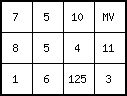

Name
col2map — Converts from column file format to PCRaster map format
Synopsis
col2map [options]columnfilePCRresult
columnfile | asciifile |
PCRresult | specified by data type option; if data type option is not set: data type of PCRclone |
| spatial |
Options
- --clone PCRclone
PCRclone is taken as clonemap. If you have set a global clonemap as global option, you don't need to set clone in the command line: the clonemap you have set as global option is taken as clonemap. If you have not set a global clonemap or if you want to use a different clonemap than the global clonemap, you must specify the clonemap in the command line with the clone option.
--unittrue or --unitcell
- --unittrue
coordinates in
columnfileare interpreted as real distance (default)- --unitcell
coordinates in
columnfileare interpreted as distance in number of cell lengths
-B, -N, -O, -S, -D and -L
This data type option specifies the type options which is assigned to
PCRresult(respectively boolean, nominal, ordinal, scalar, directional, ldd). If the option is not set,PCRresultis assigned the data type of PCRclone or the global clone. The data incolumnfilemust be in the domain of the data type which is assigned toPCRresult. For description of these domains see the description of the different data types.
--single or --double and --small or --large
In most case, the default cell representation will be sufficient. If you want, you can specify the cell representations:
Scalar and directional data types- --single
cell values are represented by single real cell representations (default, single, precision)
- --double
cell values are represented by double real cell presentations (double precision)
Nominal and ordinal data types:
- --small
cell values are represented by small integer cell representaiton (default)
- --large
cell values are represented by large integer cell representation
if option -D is set; --degrees of --radians
- --degrees
values on
columnfileare interpreted as degrees (default)- --radians
values on
columnfileare interpreted as radians
-m nodatavalue
nodatavalue is the value in columnfile which is converted to a missing value on
PCRresult. It can be one ascii character (letters, figures, symbols) or a string of ascii charaters. For instance: -m -99.89 or -m j5w. Default, if this option is not set, 1e31 is recognized as a missing value.
-s seperator
By default, whitespace (one or more tabs, spaces) is recognized as separator between the values of a row in the
columnfile. If the values are separated by a different separator, you can specify it with the option. The separator can be one of the ascii characters (always one). In that case, col2map recognizes the specified separator with or without whitespace as separator. For instance, if the values incolumnfileare separated by a ; character followed by 5 spaces, specify -s ; in the command line (you do not need to specify the whitespace characters).
columnnumbers
- -x columnnumberx
is the column number of the x coordinate in
columnfile(default 1)- -y columnnumbery
columnnumbery is the column number of the y coordinate in
columnfile(default 2)- -v columnnumberv
columnnumberv is the column number of the cell values in
columnfile(default 3)
Each cell on PCRresult is assigned the cell value on columnfile
which has x,y coordinates that define a point in that cell";" for assignment
of values in columnfile which have x,y coordinates at the edges of
cells on PCRresult, the following options are used:
--coorcentre, --coorul or --coorlr
- --coorcentre (default) or --coorul
values in
columnfilethat have x,y coordinates at the upper and left margins of a cell come into that cell, values at the bottom and right margins come into neighbouring cells. So, cell values with x, y coordinates at vertexes of cells come into the cell at the lower right side of the vertex.- --coorlr
values in
columnfilethat have x, y coordinates at the bottom and right margins of a cell come into that cell, values at the upper and left margins come into neighbouring cells. So, cell values with x, y coordinates at vertexes of cells come into the cell at the upper left side of the vertex.
Options to specify which value is assigned if two or more values in
columnfile are found which all come into the same cell on
PCRresult:
-a, -h, -l, -H, -M
- -a
average value of the values found within the cell is assigned (default for scalar and directional data; for directional data and assignment of records without a direction, see notes)
- -h
highest score: most occuring value found for the cell is assigned; if two values are found the same (largest) number of times, the highest value of these values is assigned, this is called a majority conflict (default for boolean, nominal, ordinal and ldd data)
- -l
lowest score: least occurring value found for the cell is assigned (option for nominal, ordinal, boolean, ldd data); if two values are found the same (smallest) number of times, the smallest value of these values is assigned, this is called a minority conflict.
- -H
highest value found for the cell is assigned (option for scalar or ordinal data)
- -M
lowest value found for the cell is assigned (option for scalar or ordinal data)
Operation
The columnfile is converted to PCRresult, which is an expression
in PCRaster map format with the location attributes of PCRclone. The
columnfile must be in ascii format. Two types of column format can
be converted; the col2map operator detects these formats by itself:
a column file in simplified Geo-EAS format:
line 1: header, description
line 2: header, number (n) of columns in the file
line 3 up to and including line n + 2: header, the names of the
n variables subsequent lines: data; they are formatted in at least three columns
containing the x coordinates, y coordinates and values, respectively. Each
line contains a record. The default column separator of the col2map
operator is chosen to resemble the separator of the simplified Geo-EAS
format.
- a plain column file:
This is a file formatted like the simplified Geo-EAS format, but without header. The column separator may be different and can be specified with the option -s separator.
Fields with the x coordinates, y coordinates and values in the
columnfile may contain the characters: -eE.0123456789. Fields may
not be empty, valid fields are for instance:
-3324.4E-12 for -3324.4 x 10-12
.22 for 0.22
For each cell on PCRresult the operator searches in columnfile for
records that have x,y co-ordinates that come into that cell on
PCRresult. If one single record is found, the value of this record is
assigned to the cell, if several records are found, the value which is
assigned is specified by the option (-a, -h, -l, -H or -M). A cell on
PCRresult without a value on columnfile that falls into the cell is
assigned a missing value on PCRresult.
Notes
Directional data: If the option -a (average, default) is set, and both records
without a direction (value -1) and records with a direction come into a cell
(a so called direction conflict), the records without a direction are
discarded and the cell value is computed from the records containing a
direction only. Thus a cell is assigned a no direction value (value -1) only
if all records for that cell don't have a direction.
Using col2map for generating a PCRresult of data type ldd is
quite risky: probably it will result in a ldd which is unsound (data types).
If you do want to create a PCRresult of data type ldd use the operator
lddrepair afterwards. This operator will modify the ldd in such a way
that it will be sound, see the operator lddrepair.
Examples
col2map --clone mapclone.map -S -m mv -v 4 ColFile1.txt Result1.map
ColFile1.txtfield data 5 xcoord ycoord pH1 pH2 code 25 25 mv 3.4 123 25 35 7.1 3.8 132 25 45 7.5 mv 123 35 25 7.4 3.1 123 35 35 7.7 3.0 321 35 45 7.8 3.9 123 45 25 7.1 3.4 321 45 35 7.4 3.1 213 45 45 7.8 3.7 321 55 25 7.4 3.2 314 55 35 7.1 3.2 141 55 45 7.9 3.7 132 mv mv 7.4 3.2 111 mv mv 7.6 3.1 111Result1.mapmapclone.map
col2map --clone mapclone.map -O -m mv -x 2 -y 3 -v 6 --coorlr -H ColFile2.txt Result2.map
ColFile2.txt1 30 20 7.1 3.5 1 1 2 30 30 5.3 3.8 8 0 3 30 40 8.7 3.5 7 1 4 40 20 9.8 3.2 6 0 5 40 30 8.5 3.2 5 1 6 40 40 9.4 3.1 5 0 7 50 20 7.7 3.2 2 0 8 50 30 6.2 2.9 4 0 9 50 40 7.4 3.1 10 1 10 60 20 5.3 3.3 3 1 11 60 30 5.4 3.5 11 1 12 60 40 3.4 3.9 mv 0 13 1200 345 3.4 2.1 121 1 14 45.3 25.8 5.3 3.2 125 1 15 46.2 23.7 5.3 3.2 124 0Result2.mapmapclone.map